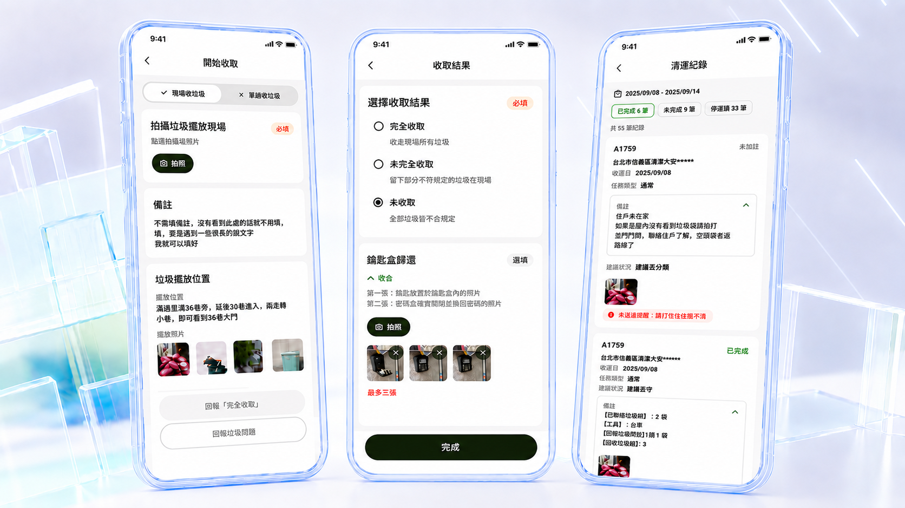
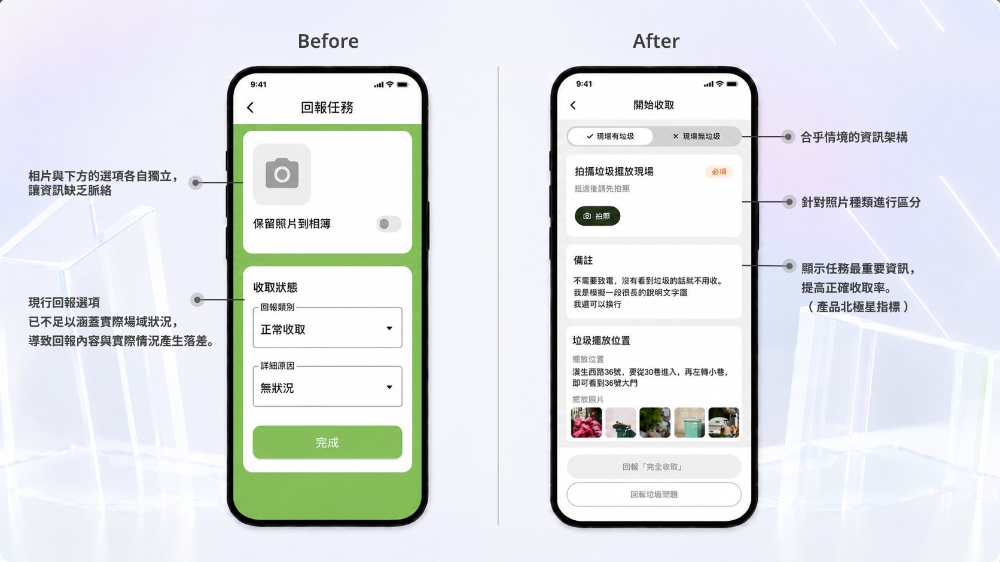
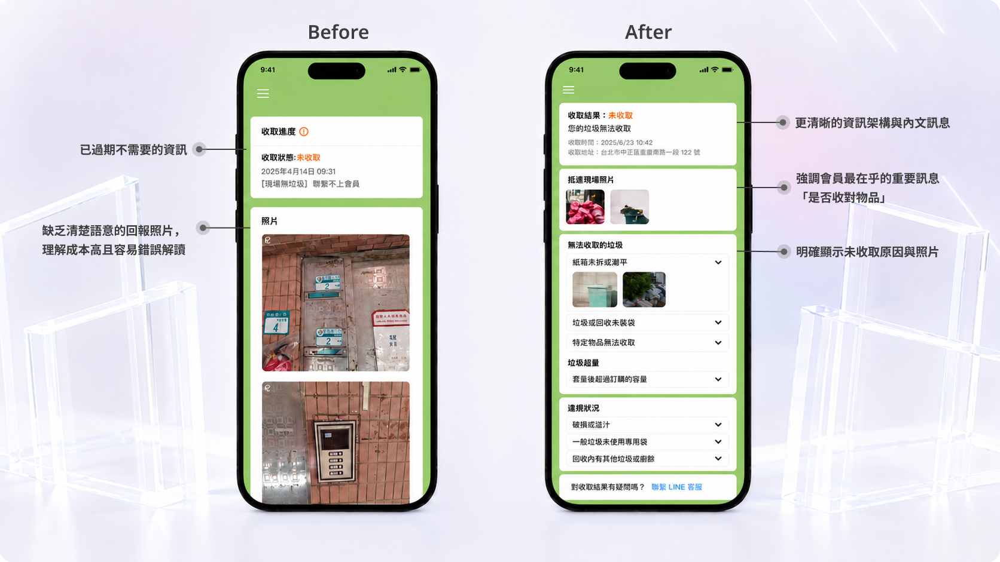
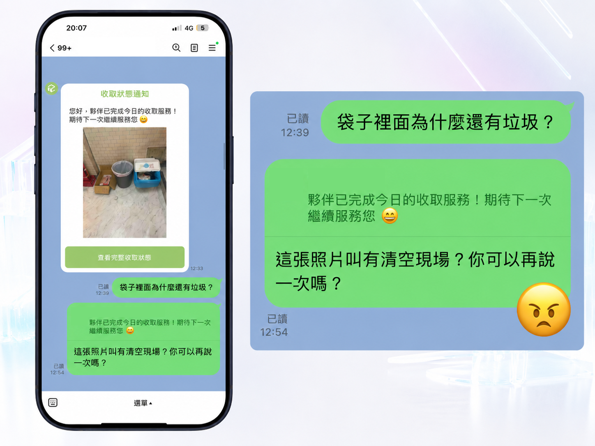
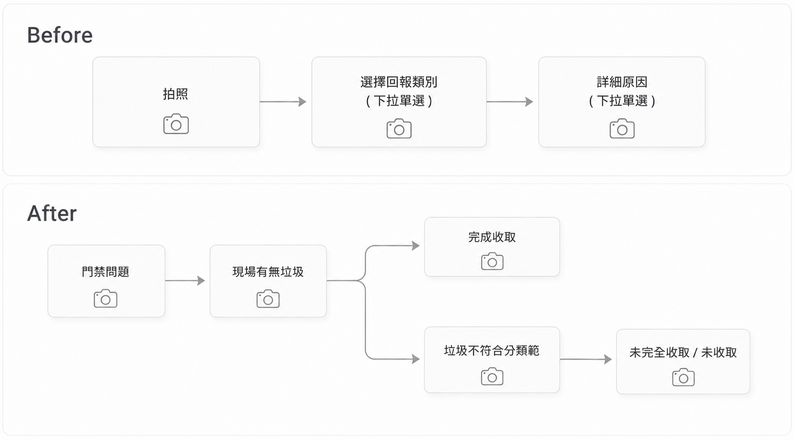

逆物流收取 app

團隊成員
PM、前端工程師、後端工程師
參與項目
使用者訪談、User Flow、設計系統、Prototype
時間
2025.5 — 2025.8
專案背景
此專案為垃圾收取服務的回報流程優化。原本收取夥伴完成任務後，主要透過上傳照片作為服務回報，但照片缺乏明確語意與上下文，導致會員與平台營運都需要自行解讀現場狀況，增加理解成本，也容易造成誤會與客訴。
我在此專案中擔任 Product Designer，負責使用者研究、問題定義、資訊流重構、User Flow、Prototype、介面設計、Design System 應用與易用性測試。
Impact
重新設計收取人員 app 的回報流程，取得完善的資訊，再重新設計會員 app 的資訊架構，讓會員看到的資訊更為清晰且正確。
收取人員 App

會員 App

Problem
有正確收取但被誤解為收取任務未完成的客訴案例

定義關鍵問題
系統提供了資料，但沒有提供可理解的資訊。
回報資訊容易誤判、或是需要花很多時間解讀。
問題源頭在於收取人員 app 的回報流程與功能無法滿足實際需求。
Research
AI 在此階段的應用
主要用於協助整理訪談紀錄、歸納高頻情境、萃取重複痛點，並作為初步分類架構的參考。
最終分類與流程決策仍由我依實際服務情境判斷與調整。
使用工具：Google NotebookLM、ChatGPT Plus
如何快速完成回報，
不增加現場操作負擔
如何清楚知道垃圾
是否有被正確收取
如何符合公司政策，
並且在客訴當下快速判斷原因
設計挑戰
收取人員追求「快速完成任務」，會員則期待「充分理解收取狀況」，兩者在資訊密度上的需求存在落差
Design Strategy
核心策略是將原本「自由回報」轉為「結構化＋情境化回報」，讓每一次回報都具備明確語意，而不是只依賴照片。
我先盤點哪些情況屬於正常完成、哪些屬於異常、哪些需要補充說明，避免在情境未釐清前直接設計 flow，造成流程缺漏。
此流程同時影響會員、收取夥伴與平台營運。如果只優化其中一方，可能會把負擔轉移給另一方。因此設計目標不是單點最佳，而是在效率、清楚度與後續處理成本之間取得平衡。
高頻情境優先設計成最短路徑，讓大部分夥伴可以快速完成回報；低頻例外情境則透過次要流程承接，避免主流程過度複雜。
設計了三個版本 User Flow 最終與利害關係人討論定案以下版本

Design Solution
AI 在此階段的應用
AI 在此階段主要用於協助整理測試紀錄、歸納使用者卡住的節點，以及彙整後續調整項目。
Usability Testing
測試後，我根據回饋調整了原因分類、CTA 文字與詳細回報的進入時機，讓高頻情境保持快速，低頻情境則能提供足夠脈絡。
AI 在此階段的應用
AI 在此階段主要用於協助整理測試紀錄、歸納使用者卡住的節點，以及彙整後續調整項目。
Design System
AI 在此階段的應用
AI 在此階段主要用於協助整理測試紀錄、歸納使用者卡住的節點，以及彙整後續調整項目。
Result
Reflection
這個專案讓我學到，服務回報的核心不只是「有沒有留下紀錄」，而是資訊是否能被不同角色正確理解。 在設計上，我不只重新整理介面，而是從資訊流、角色需求與後續營運成本出發，將模糊的照片回報轉化為可判讀、可追蹤、可維護的結構化流程。這也讓我更理解 Product Designer 在產品團隊中的價值：不只是改善畫面，而是透過設計降低理解成本、提升信任感，並讓產品流程真正能被執行與維護。